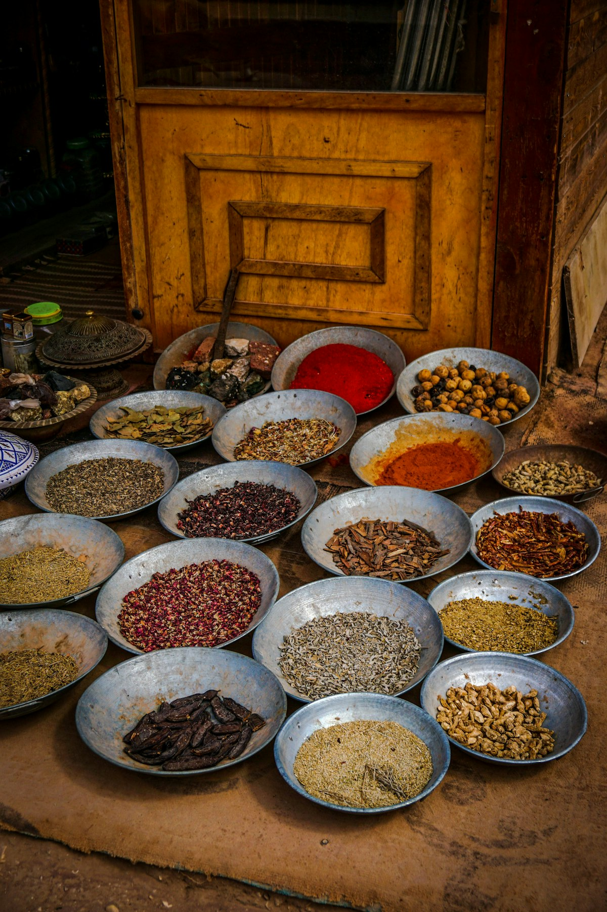

Food Science
Crocin Pigment Kinetics & Culinary Solubility
A rigorous biochemical exploration into carotenoid glycosides, spectrophotometric color grading, and molecular stability in confectionery.
Read Article